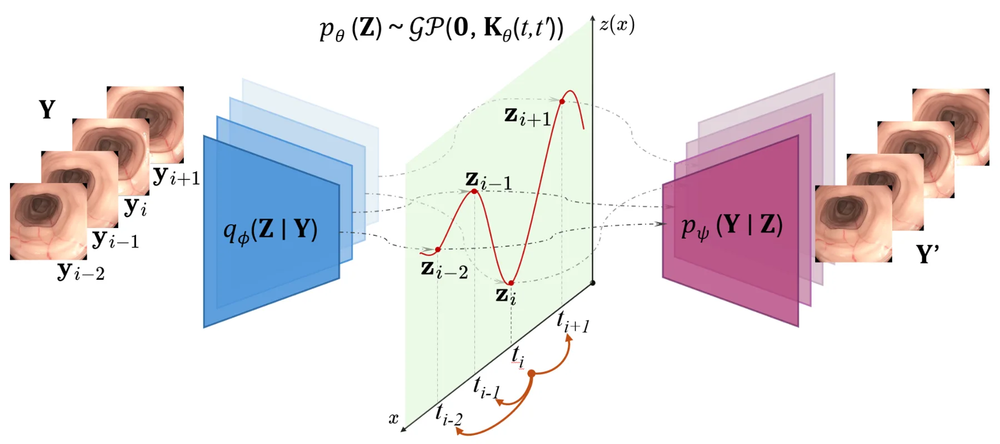

面向内窥镜视频的 Gaussian Process Prior VAEGaussian Process Prior Variational Autoencoder for Endoscopic Videos
核心是医学视频恢复而非 SLAM，但其对下游视觉里程计的量化改善和不确定性输出值得作为退化视觉前端参考。
一句话工作总结
GPVAE 用时间 GP 先验恢复内窥镜视频并输出不确定性，摘要显示可降低下游 VO/PoseNet 轨迹误差。
摘要
内窥镜视频分析对胃肠诊断和计算机辅助手术至关重要，但视频序列经常受到高光反射、运动伪影和缺帧影响。这些瞬态退化会干扰医生判断，并破坏三维重建、导航等下游任务。本文提出 Gaussian Process Prior Variational Autoencoder（GPVAE），用时间 Gaussian process prior 替代标准 factorized latent prior，从而进行带不确定性的缺帧插值和视频恢复。框架结合内窥镜专用编码器，包括卷积 EndoVAE backbone 和来自 GastroNet-5M 的预训练 ViT encoder，并使用 HPA 与 SPA 两种可扩展 GP 近似。高光反射由 DUCKNet-based masking pipeline 处理，使损坏像素不参与重建目标。在 C3VDv2 数据集上，最佳 GPVAE 平均将图像 RMSE 较 VAE baseline 降低 21.9%，最多降低 26.1%；在 classical visual odometry 与 PoseNet 下游任务上，trajectory RMSE 平均降低 12.7%，代价是每 epoch 训练时间平均增加 27.3%。
Endoscopic video analysis is essential for gastrointestinal diagnosis and computer-assisted interventions, but video sequences are routinely degraded by specular reflections, motion artifacts, and missing frames. These transient corruptions can distract clinicians, reduce image interpretability, and disrupt downstream tasks such as 3D reconstruction and navigation. Effective restoration therefore requires methods that exploit temporal continuity rather than treating frames in isolation. We introduce a Gaussian Process Prior Variational Autoencoder (GPVAE) framework for endoscopic video restoration that replaces the standard factorized latent prior with a temporal Gaussian process prior, enabling interpolation of missing frames with uncertainty-aware reconstruction. The framework combines endoscopy-specific encoders, including a convolutional EndoVAE backbone and pretrained Vision Transformer encoders from GastroNet-5M, with two scalable GP approximations: Hierarchical Prior Approximation (HPA) and Sparse Precision Approximation (SPA). Specular reflections are handled using a DUCKNet-based masking pipeline that excludes corrupted pixels from the reconstruction objective. On the C3VDv2 colonoscopy dataset, the best GPVAE variants reduced image reconstruction RMSE by 21.9\% on average, and by up to 26.1\%, relative to matched VAE baselines. Downstream trajectory RMSE was reduced by 12.7\% on average across classical visual odometry and a pretrained PoseNet, at an average increase of 27.3\% in training time per epoch. Finally, the GP posterior provides per-frame uncertainty estimates that reflect temporal support and offer a confidence signal for restored frames.
中文解读摘录
- 链接：abs / PDF；作者：Ivan De Boi, Xinxing Shi, Xiaoyu Jiang, Tim J. M. Jaspers, Francisco Caetano, Mauricio A. Alvarez, Fons van der Sommen, Sam Van der Jeught；类别：cs.CV；采集 score=7。
- 核心思路：用 temporal Gaussian Process prior 替代 VAE factorized latent prior，面向内窥镜视频中的高光、运动伪影和缺帧恢复，并输出逐帧不确定性。
- 方法要点：结合 EndoVAE/GastroNet-5M 编码器、HPA/SPA 两种可扩展 GP 近似，以及 DUCKNet specular reflection mask；在 C3VDv2 上平均降低图像 RMSE 21.9%，并让 classical VO 与 PoseNet 下游 trajectory RMSE 平均降低 12.7%。
- 关注点：不是 SLAM 系统论文，但“视频恢复对下游 VO 的影响”值得关注；可检查不确定性能否作为 VO/SLAM 前端的帧权重或退化检测信号。
图表/页面预览
{kind=link}
